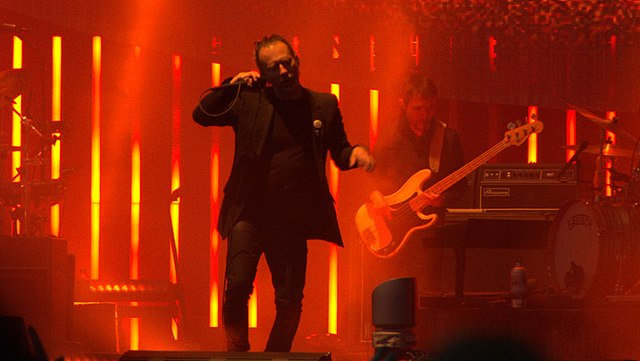
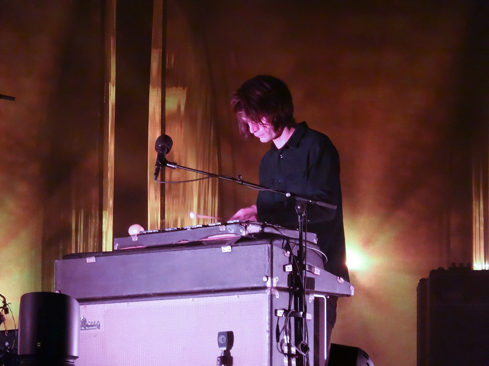
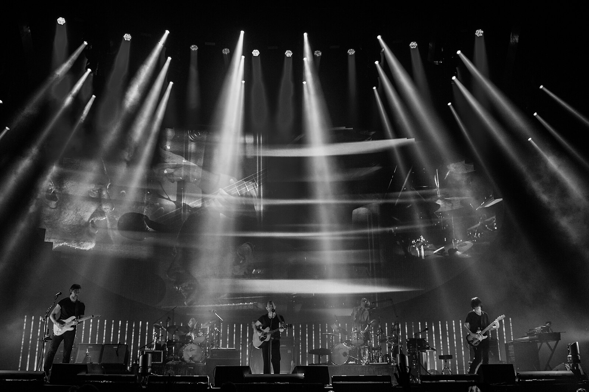

Top 5 Radiohead Songs
By: Sam Schwarz
Introduction
Radiohead is a UK-based band consisting of Thom Yorke, Jonny Greenwood, Colin Greenwood, Ed O'Brien, and Philip Selway. They have released 9 studio albums and hours of other singles and B-sides. Radiohead is one of the most critically acclaimed music groups, and my personal favorite.
1. Weird Fishes / Arpeggi

Thom York by WikiMedia
Radiohead is a band which transcends genre. Over time the group has experimented with various instruments, drawing inspiration from the greats while keeping it distinctly Radiohead. On their 7th studio album “In Rainbows” they released a beautifully hypnotic song, Weird Fishes. Since this song came so late in the band's career they had plenty of time to discover their own style, straying from the original rock and roll sounds EMI (their record label) pressured them to create. I would consider this song Art Rock, consisting of harmonizing layered guitars and a flat drum texture. If you have never heard Radiohead, this song is a great way to dive in headfirst. Thom Yorke's wailing vocalsonly add to the dreamscape.
Listen on YouTube
2. Fake Plastic Trees

Thom York by WikiMedia
Fake Plastic Trees was released as the lead single of Radiohead's second album, The Bends. This Radio smasher was adored by critics and the public, selling 400,000 copies in the UK alone. This track is distinctly rock and roll, and is my personal favorite rock song from Radiohead's, Thoms vocals were at their best, and the guitar composition feels advanced for a rock song. Fake Plastic Trees can be considered a crescendo, one of my favorite musical elements. My favorite performance of this song is on Conan O'brien's talk show where the band performed it live in the studio.
Listen on YouTube
Everything In Its Right Place

Jonny Greenwood by WikiMedia
Kid A, the most successful left turn in musical history. Coming off the commercial success of their third album, Ok Computer, the band was burned out. The tour schedule left them hating rock music and themselves. The solution? Kid A. This experimental electronica album caught the word off guard, the drowning synths and electronic vocals came as a shock, but many loved it. The first track, Everything in its Right Place sets the mood for Kid A. Reversed vocals looming in the background while heavy synths set the tone, not to mention Thoms seemingly gibberish lyrics clearly enunciated. I remember the first time I heard Everything in Its Right Place, I was moping the floors at work, and I must have played it back 10 times completely engulfed in the new world Radiohead had created.
Listen on YouTube
There, There

Radiohead by WikiMedia
This Melodic rock song debuted on Radiohead's sixth studio album, Hail To The Thief. Although the album was rated highly by critics and the public it was still considered a flop for Radiohead, their bar was simply set too high. For the band to feel comfortable experimenting with new sounds again they needed to break expectations. There, There is a melodic rock song seeing Radiohead moving back towards their roots. My favorite portion of the song is the electric guitar riff towards the end of the song. This song can also be considered a crescendo.
Listen on YouTube
Daydreaming
Thom York by WikiMedia
A Moon Shaped Pool is Radiohead's most recent album, and their most heartfelt. The second single, Daydreaming is a standout for me. The song boasts a beautiful piano melody paired with soft electronic sounds reminiscent of C418, a great German musician famous for creating the Minecraft soundtrack. When the string composure by Jonny Greenwood harmonizes with the piano and Thoms looping vocals I can't help but get goose bumps every time I hear it. When I first heard Daydreaming the melody was so stuck in my head, I had to learn the piano coords to play it out myself.
Listen on YouTube
Resources
Images
- "Weird Fishes" Pennington, Mike. Photo of Thom York. 2017. Wikimedia.org. Date Accessed 4 May, 2025.
- "Fake Plastic Trees" PH, Raph. Photo of Thom York. 2018. Wikimedia.org. Date Accessed 4 May, 2025.
- "Everything in its Right Place" Chris. Photo of Jonny Greenwood. 2016. Wikimedia.org. Date Accessed 4 May, 2025.
- "There, There" Sun, Kenny. Photo of Radiohead on stage. 2018. Wikimedia.org. Date Accessed 4 May, 2025
- "Daydreaming" PH, Raph. Photo of Thom York. 2018. Wikimedia.org. Date Accessed 4 May, 2025